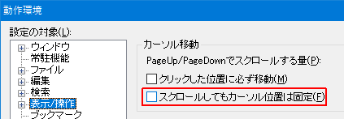

[HME0100A]
●範囲選択中に画面をスクロースさせると範囲選択が広がってしまう

- 範囲選択中に画面をスクロースさせると、範囲選択が広がってしまうのですが？

-
デフォルト状態では、マウスホイールやマウスでスクロールバーを操作し画面をスクロールさせた場合でも、エディタ画面上のカーソル位置は変化しません(赤の縦線がカーソルになります)。
スクロール前 下にスクロール 上にスクロール line7 line10 line3 line8 line11 line4 line9 line12 line5 line10 line13 line6 line11 line14 line7 line12 line15 line8 line13 line16 line9 line14 line17 line10 結果的に、スクロールさせるとカーソルが移動する事になります。
その為、範囲選択中にマウスでスクロールさせると、カーソル移動にともない選択範囲が変化してしまいます。
この動作は、「その他」-「動作環境」-「表示/操作」-「カーソル移動」にある、「スクロールしてもカーソル位置は固定」で変更できます。

「スクロール」とはマウスによるスクロールバーの操作や、マウスホイールによる操作になります。基本的に「PgUp」 「PgDn」はカーソル移動になるので対象外です。